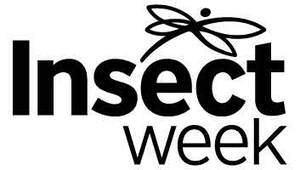
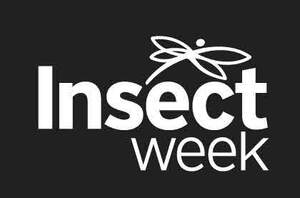

Trade Mark Journal No.2026/003 16 January 2026
UK00004314521 22 December 2025 (9,16,41,42)
Mark 1

Mark 2

- Class 9
- Educational mobile applications; pre-recorded digital and analogue audio and video media; electronic publications; recorded and downloadable media; podcasts; recorded conferences; recorded webinars; image, data and video recordings; downloadable computer software applications; downloadable electronic publications; downloadable journals in the field of entomology; downloadable written articles in the field of entomology; software; databases; application software (APPs).
- Class 16
- Printed matter; printed publications; educational, instructional, training and/or teaching materials (except apparatus); ; journals; hand books; books; printed publications; magazines; newsletters, books, booklets, brochures, leaflets, flyers, collection envelopes, catalogues, posters, paper banners, paper flags, greeting cards, calendars, notebooks, stationery, stickers; educational supplies; photographs and prints.
- Class 41
- Educational services; provision of training and learning projects; entertainment (including for charitable and/or fundraising purposes); cultural activities and events (including for charitable and/or fundraising purposes); planning, organising and/or conducting conferences, information events, meetings, seminars, exhibitions and shows; arranging and conducting of training workshops; publication of printed matter, booklets, texts, magazines, periodicals and pamphlets; education information; entertainment; cultural activities; library services; online library services; library services by means of a computerised database; conference services; webinars; educational services (not downloadable) provided via the Internet; organisation of exhibitions for education purposes; providing on-line electronic publications; publication of electronic books and journals on-line; production of films, video and television programmes; rental of images, lithographs, photographs, prints, paintings and digitisations thereof; organising of educational conferences; conducting conferences in relation to the study of insects; organizing conventions for entomology; organizing events in the field of entomology for cultural or educational purposes; arranging and conducting educational conferences; charitable education services, namely, providing seminars and workshops in the field of entomology; educational services, namely, providing incentives to people to demonstrate excellence in the field of entomology; providing recognition and incentives by the way of awards to demonstrate excellence in the field of entomology; organisation and hosting of entomology events; arranging, organizing and conducting of competitions; consultancy, advisory and information services all relating to the aforesaid services.
- Class 42
- Scientific and technological services and research and design relating thereto; industrial analysis and research services; medical and scientific research information in the field of entomology; scientific research information in the field of wildlife preservation; certification of educational services; preparation and issue of reports, papers, publications and consultation papers relating to the field of entomology and wildlife preservation; providing temporary use of on-line non-downloadable software and applications consultancy, advisory and information services all relating to the aforesaid services.
Royal Entomological Society of London
Representative: Birketts LLP